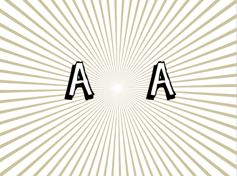

We’re going to make a game that tests your reflexes. The two sprites on the screen are going to change repeasedly and the player will have to stop the sprites when they match by using the spacebar.

Let’s make a sprite that has several costumes.
Now let's make the costumes change automatically.
Scripts tabEvents and drag a when flag clicked into the scripts area. This will be triggered when we click the green flag.Data and Make a variable. Call it leftCostume, then uncheck the box next to it so it doesn’t display on the stage.Set leftCostume block into the scripts areaOperators tab and then drag the pick random 1 to 10 block into the scripts area. Change the 10 to a 4. Then drag the pick random 1 to 4 into the Set leftCostume to blockClick the green flag.
You should see the Sprite change costume.
What changes would you have to make if you wanted to add more costumes to the sprite?
Now let's make the costumes change on their own.
State Flags. Create a new variable and name it gameOnset gameOn to 0 block into the scripts area. Start by setting the value to True. We often use values like True and False when coding. They are a type of data known as Boolean.Control and drag a Repeat until block into the scripts area.Click the green flag.
You should see the Sprites change costume on their own.
We want the player to be able to stop the costume change by pressing the spacebar
Operators find the _ = _ block and drag it onto the script area.gameOn variable we created earlier and set up the block so that it reads gameOn=Falserepeat until loop you created earlier.gameOn is True. All we need to do now is change gameOn to False when the spacebar is pressed. Click on Events and drag the when spece key pressed into the scripts area. Underneath it place a set gameOn to False.Click the green flag.
The sprite should change rapidly, and stop on a single costume when you press the spacebar.
At the moment, the sprite changes very quickly. It would be nice if there was a way to slow it down a little. We need the sprite to wait a little before changing. See if you can find a block that might help with this.
It's time to add in our second sprite.
rightCostume>rightCostume instead of leftCostume.Click the green flag.
The sprites should change and you can try and stop them when they match.
Let's set up the stage to let the player know if they've won or lost.
Stage object. We're going to want a few backdrops. Click on the Backdrops tab and choose a backdrop. We're using other/rays.When greenflag clicked block into the Stage's script area. Underneath it add a switch backdrop to Game block.Click the green flag and make sure that the stage is set to Game.
Now we need to see if the player has won or lost.
forever loop. Drag one in and place it below the switch Backdrop to Game block.if block for this. Find it in the Control section and drag it beneath your script.gameOn = False. See if you can build that, and place it in the if block.if...else... block. This is called a conditional. Find it in the Control palate and drag it into your if block.leftCostume and rightCostume are the same. See if you can build a block that reads rightCostume = leftCostume, and place it into the if...else... block.rightCostume = leftCostume then the stage should switch backdrop to Win. Otherwise it should switch to switch backdrop to LoseTry out your game again
Well done you’ve finished, now you can enjoy the game!
Don’t forget you can share your game with all your friends and family by clicking on Share on the menu bar!